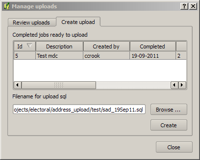
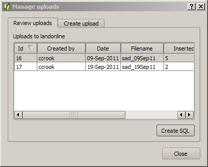

See the overview for a high level description of address uploads
This dialog manages upload jobs which generate SQL scripts to upload the address updates to Landonline.
The dialog has two tabs - "create upload" to create new uploads, and "review uploads" to review previous uploads. This can be used to regenerate previous SQL scripts.
The create upload tab displays all jobs currently set to completed, for which an upload has not already been generated.
To create an upload, select the jobs to use in the list, browse to choose a file name for the upload SQL script, and click the "Create" button

The review uploads dialog lists uploads that have already been created, and allows the SQL upload script to be regenerated.